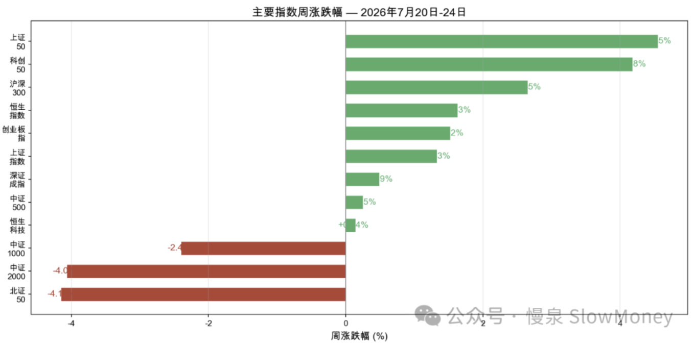
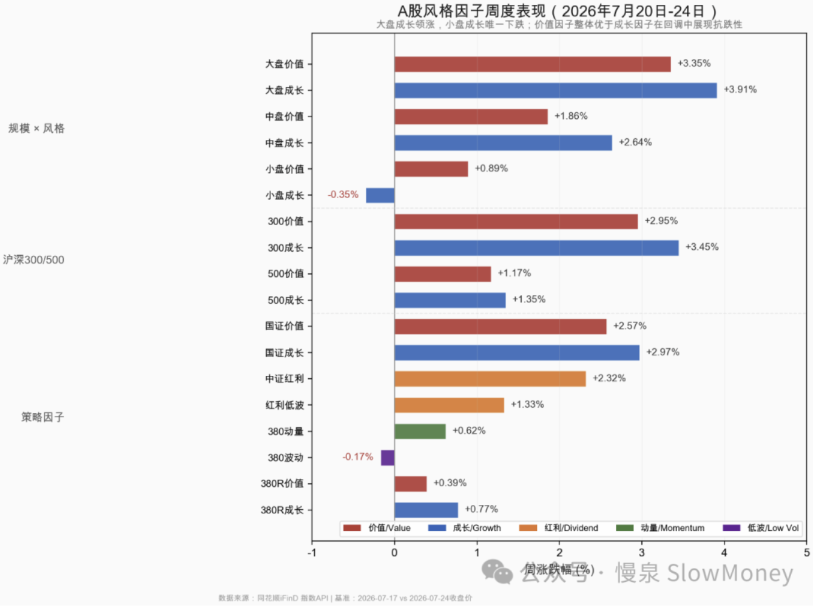

投资备忘20260725-执两用中
2026-07-20 — 2026-07-25 · W30 · 周度备忘（补档）
自驾东北大环线，体验了平原、草原、森林和城市的不断变化，继去年又一次边境自驾，推荐。随身带了出发前买的迟子建的《伪满洲国》，全程翻了 10 页——开车、扯淡、吵架、逛、吃花了太多的时间，只能回去补了。从海拉尔经根河到哈尔滨、长春、沈阳，"中东铁路""南满铁路"一直跳出来，提醒这里曾经发生过一些谈的很少、也不愿意公开讨论的事。最有趣的是当时伪满洲国定都"宽城子"（当时的新京、现在的长春）：哈尔滨是中东铁路的中枢、工商业中心，但接近苏联势力范围；沈阳当时是奉天，国内前十的城市、工业和经济中心，但旧军阀势力影响大。于是，处在南满、北满交汇处的宽城子，因为一张白纸好画图、各方势力靠边站的优势，成为最终的选择。地图上看更明显——"执其两端、用其中"的字面应用。
投资中的执两用中
投资执两：时间上可以分为短期交易和长期持股；空间上可以分为弹性标的和稳定现金资产。不同的市场 pattern 中，所谓的长短期、弹性都可能不一样。
策略取中：可以是多种表现形式——
- 一种是"取中"，最明显的是 GARP（Growth at a Reasonable Price）策略，兼顾价值和成长；
- 一种是"杠铃策略"，也是现在很多机构的策略，也可以叫"既要……又要……"策略；
- 还有一种"灵活交易"：阶段性防守、阶段性进攻、一会长期、一会短期。
心态取中：更多的时候是心态的"取中"——不追求短期交易的豪赌、也不羡慕长期投资的一劳永逸，中期（阶段）的稳定性才能使复利真正发挥效用。同时"取中"就避免被定义、被标签化，多少人被标签之后一直在这些标签阴影下活着。
Be water, my friend.
市场情况
本周 A 股经历了极致波动——从周一"极度分化"（上证 50 暴涨、中证 2000 暴跌）、周二"V 型反转"（科创 50 +10.73% 历史性暴涨）、周三周四"冰火轮动"（半导体获利回吐、电网涨停潮），到周五"全面重挫"（仅 554 只个股上涨）。全周走势完整演绎了从恐慌 → 狂喜 → 轮动 → 崩溃的情绪轮回。全周沪深 300 上涨 2.65%，Wind 全 A 上涨 0.22%，恒生科技上涨 0.14%，全部 A 股涨跌幅中位数约 -3.15%，2/3 的个股本周亏损。
本周市场特征：
- "头重脚轻"：上证 50 / 科创 50 / 沪深 300 等大盘权重指数收涨，但中证 1000 / 中证 2000 / 北证 50 等小盘指数下跌，市场结构呈现"大盘强、小盘弱"；
- "指数掩体"：全部 A 股涨跌幅中位数约 -3.15%，而主要指数平均周涨幅约 +0.2%。大盘权重股上涨掩盖了绝大多数个股的下跌，约 2/3 的 A 股本周实际亏损。逐日中位数仅周二（+0.36%）和周四（+1.49%）为正，其余三日均为下跌。
| 指数 | 本周涨跌幅 |
|---|---|
| 科创 50（周二单日 +10.73% 历史性暴涨） | ≈ +8% |
| 上证 50 | ≈ +5% |
| 沪深 300 | +2.65% |
| 恒生指数 | ≈ +3% |
| 上证指数 | ≈ +3% |
| 创业板指 | ≈ +2% |
| 深证成指 | ≈ +0.9% |
| 中证 500 | ≈ +0.5% |
| 恒生科技 | +0.14% |
| 中证 1000 | ≈ -2.4% |
| 中证 2000 | ≈ -4.0% |
| 北证 50 | ≈ -4.1% |
| 全 A 涨跌幅中位数（约 2/3 个股亏损） | -3.15% |

市场分析：监管的关注和上市公司回购 VS 美伊冲突和特斯拉、谷歌二季度自由现金流转负。当前市场的核心矛盾已从"内部结构轮动"切换至"外部冲击定价"：美伊冲突从"利多 A 股资源股"演变为"利空 A 股整体"（油价通胀封堵国内降息空间）。下周政治局会议和美联储议息会议将是打破这一困局的关键。美股核心矛盾从"AI 业绩兑现"切换至"AI 烧钱无底洞"：特斯拉 Q2 盈利 miss（EPS $0.33 vs 预期 $0.51）、谷歌自由现金流转负（-58.55 亿美元）、两家巨头同时警告资本开支飙升，引发市场对 AI 投入回报率的广泛质疑；但英特尔 Q2 营收增 25% 超预期、盘后拉涨，为半导体方向提供了部分对冲。
本周风格因子呈现清晰的"大优小劣、价值股抗跌 + 成长股高弹性"格局。核心驱动力来自三重逻辑：
- 机构资金从小盘撤出转向大盘防御（规模因子）；
- 低利率环境下红利 / 价值策略持续吸引险资（价值因子）；
- 周二半导体爆发提供成长因子脉冲收益，但未改变整体弱势趋势（弹性但不可持续）。

市场展望
市场需要时间、需要量。市场跟 2021 年的抱团见顶和后续震荡、2020 年 7–9 月的风格转换出现差异：一个是震荡的幅度比之前大，另一方面是当前产业周期的位置高。但都有一个企稳的前提条件就是时间——震荡的时间可能延长，这种情况下，弹性谨慎抄底、结构再次占优。绝对收益继续谨慎，相对收益对于高位资产继续谨慎，找新红利。
市场正在经历"内需失速 + 外需独撑 + 政策托底预期"的过渡期。经济基本面驱动的下行压力是主导力量，政策预期是缓冲垫而非反转催化剂；情绪恐慌是对基本面恶化的合理反映，而非独立的恐慌事件。当前经济和市场三重矛盾：
- 外需强劲 VS 内需塌陷：6 月出口同比 +26.8%（连续第二个月接近 +20% 以上），但社零仅 +1.0%（5 月甚至为 -0.6%），内外需剪刀差达到历史极端水平——出口的高增长可能部分来自关税预期下的"抢出口"行为，可持续性存疑；
- 总量尚可 VS 结构极度分化：上证 50 近 20 日 +1.7%、沪深 300 仅 -4.5%，而中证 2000 暴跌 -20.1%、中证 1000 暴跌 -18.7%，大—小盘表现差距超过 20 个百分点，呈现极端的"flight to quality"特征；
- 政策强预期 VS 落地不确定性。
组合备忘
Beta 组合表现继续跑赢市场（市场指 Wind 全 A 指数），Macro 同样。组合仓位微升：Beta 策略仓位 79% 附近，利用周二市场波动增加交易性持仓；Macro 策略仓位持平 69%（其中转债 30%），整体保持谨慎。组合的表现主要受到以下因素影响：
- 风格连续第四周对组合正贡献：红利资产、HALO 资产本周表现较好对组合有利，化工和电解铝资产表现受益于海外局势的刺激；
- 参与科技波动中的交易机会：场子还热、容易暴涨暴跌，这部分本周贡献收益；
- 港股回撤，有所承压。
| 类别 | 仓位 |
|---|---|
| Beta 策略（利用周二波动增加交易性持仓） | ≈79% |
| Macro 策略权益仓位（含转债 30%，整体保持谨慎） | 69% |
Beta 继续跑赢市场 · Macro 同样跑赢 · 周度涨幅不再公开播报
操作和思考：本周的主要操作按照上周策略参与科技股的交易，红利资产开始考虑更新持仓。
下一步：市场需要放量，在这之前仓位维持当前不高于 82%，聚焦结构、灵活交易、控制仓位的策略。市场超跌阶段的超跌科技股在市场下跌阶段要有同情心，但反弹坚决卖出，交易型仓位定位。对于红利资产、HALO 资产和超跌优质股，要区分策略：超跌优质股——主业稳定、科技 AI 布局明确，资金和风险偏好原因导致大幅下跌，即使考虑主业估值和定价已经具备相当的吸引力；HALO 资产——在外部风险持续和美元可能下行的情况下，看好这类资产短期作为 AI 资产的替代品被资金青睐，类似一季度的情况，其持续性可能比消费白酒强；红利资产——部分个股反弹接近前期高点进行换仓，保持持仓基本稳定的情况下，计划更新持仓。
上期钩子的答案：① "恐慌速度越快底部越接近"——部分兑现：周一至周三的 V 型反转（科创 50 周二 +10.73% 历史性暴涨、电网涨停潮）显示恐慌阶段性出清，但周五"全面重挫、仅 554 只上涨"说明底部仍未确认；② 全面下跌的防范风险——周五一度接近，但全周主要指数仍收涨，未演变为全面下跌；③ 超跌优质股 + HALO 的交易超额——兑现：科技波动中的交易机会本周贡献收益，HALO、化工电解铝受益于海外局势；④ 月底会议交易型资产——顺延为下周关键：政治局会议 + 美联储议息会议是打破"外部冲击定价"困局的窗口。组合连续第四周跑赢，Beta 加仓至 ≈79%、上限维持 82%。新钩子：① 政治局会议 + 议息会议的定价方向；② 红利资产更新持仓的执行；③ "执两用中"杠铃（弹性 + 现金）在情绪轮回中的表现；④ 内外需剪刀差（出口 +26.8% vs 社零 +1.0%）的收敛方向。对账窗口：2026 年 8 月上旬。